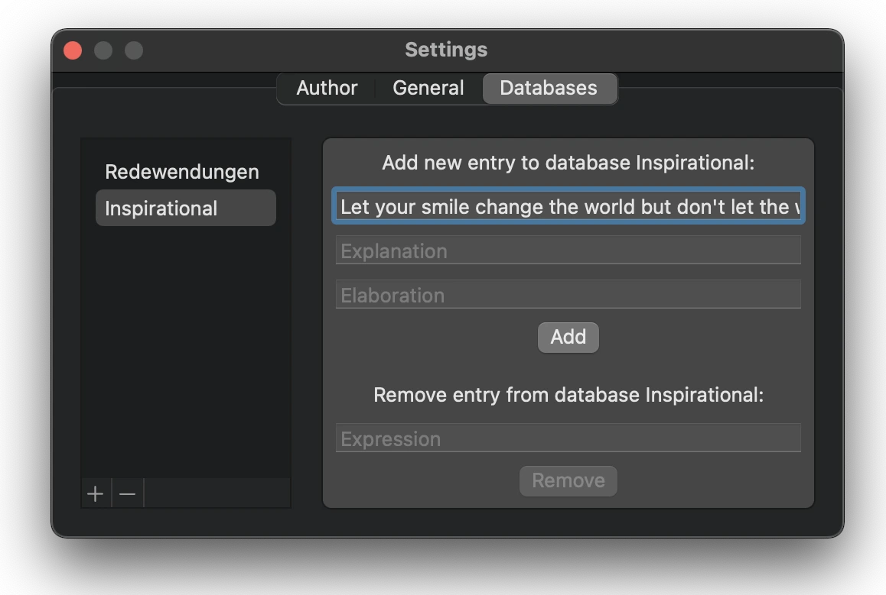

Android-Applikation in Java

Zum automatischen Erzählen der Nachtphase in den Deduktionsbrettspielen Dem Widerstand: Avalon und Secret Hitler mit der Bibliothek ExoPlayer habe ich die mobile App Narradir entwickelt. Die Sprachsynthese fürs Erzählen habe ich mit dem Text‐to‐Speech API vom Google Cloud SDK durch Bash‐Skripte gemacht.
{% include narradir-carousel.html %}
Im Vergleich mit ähnlichen Anwendungen bietet
Narradir folgende Vorteile an:
- Der/Die BenutzerIn lässt sich während des Erzählens ein Hintergrundgeräusch abspielen, um die von den Spielern unabsichtlich gemachten Geräusche zu überdecken.
- Der/Die BenutzerIn lässt sich die Dauer der Pause einstellen, während der bestimmte Figuren ihre jeweiligen Rollen ausführen müssen.
- Bei Dem Widerstand: Avalon gibt es ein „intelligentes“ System zur Auswahl der Figuren. Je nach der Anzahl der Spieler könnten unterschiedliche Figuren zur Auswahl stehen. Außerdem gelten es bestimmte Regeln zur Auswahl der Figuren. Werden manche Figuren ausgewählt bzw. abgewählt, könnten dann andere Figuren automatisch ausgewählt oder abgewählt werden.
MacOS Desktop-Applikation in SwiftUI für Fremdsprache-Lernende
Ich bin unlängst aus der Schweiz ausgezogen aber ich will mein Deutsch nicht vergessen. Deshalb habe ich mit der Python-Bibliothek Beautiful Soup eine Liste deutsche Redewendungen sowie ihre jeweilige Bedeutung und Geschichte aus Wikipedia ausgelesen. Diese Daten habe ich in einer SQLite Datenbank gespeichert.
Danach habe ich mit SwiftUI eine App für die Menüleiste geschrieben. Die App poppt in vom Benutzer spezifizierten Intervallen mit einer aus der SQLite Datenbank zufällig ausgewählten Redewendung auf. Diese Pop-ups dienen als virtuelle Zettel für mein regelmäßiges Lernen.
{% include text-popover-carousel.html %}
Der/Die BenutzerIn lässt sich auch das Einstellungsmenü öffnen und neue Datenbanken kreieren, damit das Pop-up andere vom Benutzer spezifizierten Texte anzeigen könnte:

Android-Applikation in Java
Ich habe diese einfache mobile App entwickelt, um mir die Comics von XKCD anzuschauen. Die JSON-Daten jedes Comics werden mit der Bibliothek Volley von der XKCD-Webseite abgerufen. Der/Die BenutzerIn lässt sich in das angezeigte Comic zoomen, die persönliche Beschreibung des Comics des Künstlers nach einem Longpress anzeigen, zu einem anderen Comic springen und sogar das angezeigte Comic in die Fotomediathek speichern.
{% include xkcdbrowser-carousel.html %}
Web scraping in Python
Ich wollte die Anzahl der Commits vergleichen, die ich auf den jeweiligen Standardbranch (normalerweise master oder main) meiner persönlichen Repositorys gemacht habe. Deshalb habe ich die nötigen Daten in Python aus dem GitHub API ausgelesen. Danach habe ich die Daten in einer Pandas Datenstruktur sortiert und angezeigt.
Simulation der Evolution einer gitterförmigen Population von Zellen in C++ mit Qt
Gegeben sei ein Gitter, in dem jedes Quadrat eine Zelle ist. Jede Zelle kann einen von zwei Zuständen einnehmen, welche als lebendig (1) oder tot (0) bezeichnet werden. Unter den folgenden vier Regeln hängt der Zustand jeder Zelle in der Folgegeneration nur vom aktuellen Zustand der Zelle selbst und den aktuellen Zuständen ihrer acht Nachbarzellen (horizontal, vertikal, oder diagonal) ab:
- Lebende Zellen mit weniger als zwei lebenden Nachbarn sterben in der Folgegeneration an Unterbevölkerung (z.B. wegen Einsamkeit).
- Eine lebende Zelle mit zwei oder drei lebenden Nachbarn bleibt in der Folgegeneration am Leben (ideale Populationsdichte).
- Lebende Zellen mit mehr als drei lebenden Nachbarn sterben in der Folgegeneration an Überbevölkerung (z.B. wegen mangelnder Nährstoffe).
- Eine tote Zelle mit genau drei lebenden Nachbarn wird in der Folgegeneration neu geboren (ideale Populationsdichte).